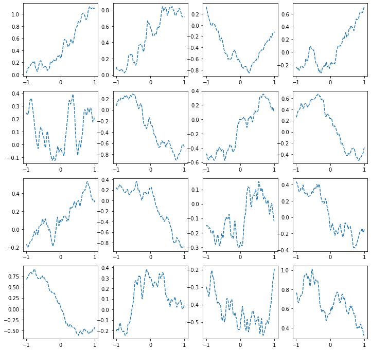

import torch
import numpy as np
import matplotlib.pyplot as plt
import pandas as pdDL ANN 정리
- toc:true
ReLU함수
ReLU함수의 등장 배경
df=pd.read_csv('https://raw.githubusercontent.com/guebin/DL2022/master/_notebooks/2022-10-04-dnnex0.csv')
plt.plot(df.x,df.y,'o',alpha=0.02)
plt.plot(df.x,df.underlying,'-b')
위와 같이 증가하다가 감소하는 underlying을 표현하기 위해서는 꺽이는 그래프를 만들어야 한다. 꺽인 그래프를 만드는 방법은 ReLU함수 등을 사용하면 된다.
\(ReLU(x) = \max(0,x)\)
x= torch.tensor(df.x).float().reshape(-1,1)
y= torch.tensor(df.y).float().reshape(-1,1)relu=torch.nn.ReLU()
plt.plot(x,'--r')
plt.plot(relu(x),'--b')위의 그래프의 파란선을 보면 음수는 0이 되고 양수의 값은 그대로인 것을 확인할 수 있다. 이것이 렐루함수이다.
꺽인 그래프 만들기
선형 변환 \(\to\) ReLU \(\to\) 선형변환 구조를 사용하여 꺽인 그래프를 표현
torch.manual_seed(43052)
l1 = torch.nn.Linear(in_features=1,out_features=2,bias=True) # 입력이 1개인데 출력이 2개 -> 꺽이는 점 최대 1개
a1 = torch.nn.ReLU() # 음수는 0 양수는 그대로
l2 = torch.nn.Linear(in_features=2,out_features=1,bias=True) # l1에 의해 출력이 2개가 되어 l2의 input은 2이고 이를 다시 하나로 만들기 위해 output을 1로 지정
a2 = torch.nn.Sigmoid() # 출력의 범위는 0 ~ 1 & 0과 1에 가까워질수록 기울기가 완만해짐net = torch.nn.Sequential(l1,a1,l2,a2)l1.weight.data = torch.tensor([[1.0],[-1.0]])
l1.bias.data = torch.tensor([0.0, 0.0])
l2.weight.data = torch.tensor([[ -4.5, -9.0]])
l2.bias.data= torch.tensor([4.5])
l1.weight,l1.bias,l2.weight,l2.bias(Parameter containing:
tensor([[ 1.],
[-1.]], requires_grad=True), Parameter containing:
tensor([0., 0.], requires_grad=True), Parameter containing:
tensor([[-4.5000, -9.0000]], requires_grad=True), Parameter containing:
tensor([4.5000], requires_grad=True))선형변환을 통해 그래프 만들기
plt.plot(l1(x).data)ReLU를 통해 꺽이는 점 만들기
plt.plot(a1(l1(x)).data)선형 변환을 통해 2개의 그래프를 하나로 만들기
plt.plot(l2(a1(l1(x))).data,color='C2')시그모이드 함수를 사용해 비선형 + 0 ~ 1사이에 존재하도록 변환
plt.plot(a2(l2(a1(l1(x)))).data,color='C2')
#plt.plot(net(x).data,color='C2') # 위와 똑같은 결과DNN 적용
- 다양한 예제를 위와 같은 모델로 적합시킬 수 있다.
- 선형 변환시 out_feature를 크게 지정하면 지정할수록 꺽이는 점이 많아져 표현력이 증가함
단, 그만큼 모델이 복잡해지고 파라미터의 수가 커짐
df = pd.read_csv('https://raw.githubusercontent.com/guebin/DL2022/master/_notebooks/2022-10-04-dnnex2.csv')
df| x | underlying | y | |
|---|---|---|---|
| 0 | -1.000000 | 14.791438 | 14.486265 |
| 1 | -0.999000 | 14.756562 | 14.832600 |
| 2 | -0.997999 | 14.721663 | 15.473211 |
| 3 | -0.996999 | 14.686739 | 14.757734 |
| 4 | -0.995998 | 14.651794 | 15.042901 |
| ... | ... | ... | ... |
| 1995 | 0.995998 | 5.299511 | 5.511416 |
| 1996 | 0.996999 | 5.322140 | 6.022263 |
| 1997 | 0.997999 | 5.344736 | 4.989637 |
| 1998 | 0.999000 | 5.367299 | 5.575369 |
| 1999 | 1.000000 | 5.389829 | 5.466730 |
2000 rows × 3 columns
x = torch.tensor(df.x).float().reshape(-1,1)
y = torch.tensor(df.y).float().reshape(-1,1)plt.plot(x,y,'o',alpha=0.02)
#plt.plot(df.x,df.underlying,'-b')torch.manual_seed(43052)
net = torch.nn.Sequential(
torch.nn.Linear(in_features=1,out_features=32), # x:(n,1) --> u1:(n,32)
torch.nn.ReLU(), # u1:(n,32) --> v1:(n,32)
torch.nn.Linear(in_features=32,out_features=1) # v1:(n,32) --> u2:(n,1)
# 이번에는 시그모이드를 포함하지 않았는데 이는 y값이 0~1사이에 존재하지 않아서...
)# 학습전
plt.plot(x,y,'o',alpha=0.02)
plt.plot(df.x,df.underlying,'-b')
plt.plot(x,net(x).data,lw=4)loss_fn = torch.nn.MSELoss()
optimizr = torch.optim.Adam(net.parameters())
for epoc in range(12000):
## 1
yhat = net(x)
## 2
loss = loss_fn(yhat,y)
## 3
loss.backward()
## 4
optimizr.step()
optimizr.zero_grad()# 12,000번 학습 후
plt.plot(x,y,'o',alpha=0.02)
plt.plot(df.x,df.underlying,'-b')
plt.plot(x,net(x).data,lw=4)위 그래프를 확인해보면 충분히 많이 학습했음에도 불구하고 net와 underlying이 일치하지 않는 것을 확인할 수 있다.
이는 local minimum에 빠져서 제대로 학습되지 못하고 있는 것을 알 수 있다.
\(\to\) 아래는 랜덤시드를 변경해주어 적절한 초기값을 사용한 결과이다
torch.manual_seed(5)
net = torch.nn.Sequential(
torch.nn.Linear(in_features=1,out_features=32),
torch.nn.ReLU(),
torch.nn.Linear(in_features=32,out_features=1)
)loss_fn = torch.nn.MSELoss()
optimizr = torch.optim.Adam(net.parameters())
for epoc in range(12000):
## 1
yhat = net(x)
## 2
loss = loss_fn(yhat,y)
## 3
loss.backward()
## 4
optimizr.step()
optimizr.zero_grad()# 12,000번 학습 후
plt.plot(x,y,'o',alpha=0.02)
plt.plot(df.x,df.underlying,'-b')
plt.plot(x,net(x).data,lw=4)시벤코 정리(universal approximation theorem, 1989)
시벤코 정리는 선형변환 \(\to\) 시그모이드 \(\to\) 선형변환을 사용하면 모든 연속함수를 원하는 정확도로 근사시킬수 있다.
- 요즘은 선형변환 \(\to\) 렐루 \(\to\) 선형변환 와 같은 조합을 사용한다.
- 아래와 같은 적절한 선형변환(적절한 노드의 개수와 적절한 weight와 bias)을 하면 다양한 모양의 underlying을 그릴수 있다.
h = lambda x: torch.sigmoid(200*(x+0.5))+torch.sigmoid(-200*(x-0.5))-1.0
class MyActivation(torch.nn.Module): ## 사용자정의 활성화함수를 선언하는 방법
def __init__(self):
super().__init__()
def forward(self, input):
return h(input) # activation 의 출력 노드가 3개일때
torch.manual_seed(43052)
fig, ax = plt.subplots(4,4,figsize=(12,12))
for i in range(4):
for j in range(4):
net = torch.nn.Sequential(
torch.nn.Linear(1,3),
MyActivation(),
torch.nn.Linear(3,1)
)
ax[i,j].plot(x,net(x).data,'--')노드가 1024개일때
torch.manual_seed(43052)
fig, ax = plt.subplots(4,4,figsize=(12,12))
for i in range(4):
for j in range(4):
net = torch.nn.Sequential(
torch.nn.Linear(1,1024),
MyActivation(),
torch.nn.Linear(1024,1)
)
ax[i,j].plot(x,net(x).data,'--')
- 정리: 히든레이어의 노드의 수가 많으면 많을수록 표현력이 증가한다.
경사하강법 용어 정리
- ver 1: 예전: gradient descent, batch gradient descent \(\to\) 요즘: gradient descent
모든 샘플을 이용해 순간 기울기를 구하고 이를 바탕으로 업데이트
(epoch1) \(loss=\sum_{i=1}^{10}(y_i-\beta_0-\beta_1x_i)^2 \to slope \to update\)
(epoch2) \(loss=\sum_{i=1}^{10}(y_i-\beta_0-\beta_1x_i)^2 \to slope \to update\)
…
+ 앞서 사용한 코드들은 gradient descent임
yhat = net(x)
loss = torch.sum((y-yhat)**2) # loss = torch.nn.MSELoss(yhat, y)
loss.backward()
optim.step()
optim.zero_grad()- ver 2: 예전: stochastic gradient descent \(\to\) 요즘: stochastic gradient descent with batch size = 1
샘플 하나당 업데이트 한번 (하나의 샘플만을 이용해 slope계산)
(epoch1)
\(loss=(y_1-\beta_0-\beta_1x_1)^2 \to slope \to update\)
\(loss=(y_2-\beta_0-\beta_1x_2)^2 \to slope \to update\)
…
\(loss=(y_{10}-\beta_0-\beta_1x_{10})^2 \to slope \to update\)
(epoch2)
\(loss=(y_1-\beta_0-\beta_1x_1)^2 \to slope \to update\)
\(loss=(y_2-\beta_0-\beta_1x_2)^2 \to slope \to update\)
…
\(loss=(y_{10}-\beta_0-\beta_1x_{10})^2 \to slope \to update\)
…
- ver 3: 예전: mini-batch gradient descent, mini-batch stochastic gradient descent \(\to\) 요즘: stochastic gradient descent
- ver3: \(m (\leq n)\) 개의 샘플을 이용하여 slope 계산
\(m=3\)이라고 하자.
(epoch1)
\(loss=\sum_{i=1}^{3}(y_i-\beta_0-\beta_1x_i)^2 \to slope \to update\)
\(loss=\sum_{i=4}^{6}(y_i-\beta_0-\beta_1x_i)^2 \to slope \to update\)
\(loss=\sum_{i=7}^{9}(y_i-\beta_0-\beta_1x_i)^2 \to slope \to update\)
\(loss=(y_{10}-\beta_0-\beta_1x_{10})^2 \to slope \to update\)
(epoch2)
\(loss=\sum_{i=1}^{3}(y_i-\beta_0-\beta_1x_i)^2 \to slope \to update\)
\(loss=\sum_{i=4}^{6}(y_i-\beta_0-\beta_1x_i)^2 \to slope \to update\)
\(loss=\sum_{i=7}^{9}(y_i-\beta_0-\beta_1x_i)^2 \to slope \to update\)
\(loss=(y_{10}-\beta_0-\beta_1x_{10})^2 \to slope \to update\)
…
# X의 tensor size = torch.Size([12665, 784]),
# y의 tensor size = torch.Size([12665, 1])
# 12665 / 2048 ≈ 6.18
ds = torch.utils.data.TensorDataset(X,y)
dl = torch.utils.data.DataLoader(ds,batch_size=2048)
for epoc in range(10): # epoch = 7 * 10번
for xx,yy in dl: # 7번
## 1
#yhat = net(xx)
## 2
loss = loss_fn(net(xx),yy)
## 3
loss.backward()
## 4
optimizr.step()
optimizr.zero_grad()+ 정리: stochastic gradient descent를 사용하면 정확도는 비슷하지만 학습속도가 gradient descent보다 빠르다.
오버피팅
- 모델이 train 데이터에 너무 적합되어서 test 데이터의 추세를 맞추지 못하는 경우
- 데이터를 underlying + 오차라고 할때 데이터의 추세가 underlying이 아닌 오차를 따라갈 경우
(정의라기 보다는 오버피팅 용어에 대한 간단한 설명)
torch.manual_seed(5)
x = torch.linspace(0,1,100).reshape(100,1)
y = torch.randn(100).reshape(100,1)*0.01x와 y는 랜덤하게 뽑은 값이므로 x와 y사이에는 어떠한 관계도도 없다.
xtr = x[:80]
ytr = y[:80]
xtest = x[80:]
ytest = y[80:]
plt.plot(xtr,ytr)
plt.plot(xtest,ytest)
plt.title('train: blue / test: orange');torch.manual_seed(1)
net = torch.nn.Sequential(
torch.nn.Linear(1, 512),
torch.nn.ReLU(),
torch.nn.Linear(512,1)
)
loss_fn = torch.nn.MSELoss()
optim = torch.optim.Adam(net.parameters())
for epoch in range(1000):
yhat = net(xtr)
loss = loss_fn(yhat,ytr)
loss.backward()
optim.step()
optim.zero_grad()plt.plot(x,y,alpha=0.5)
plt.plot(xtr,net(xtr).data,'--') # prediction (train)
plt.plot(xtest,net(xtest).data,'--') # prediction with unseen data (test) 위의 점선들을 확인하면 train data부분인 주황점선은 데이터의 분포를 잘 따라가지만 test data부분인 초록 점선은 데이터의 분포를 전혀 예측하지 못하고 있다.
이를 통해 해당 모델은 오버피팅이 되어 있는 것을 알 수 있다.
드랍아웃
torch.manual_seed(1)
net=torch.nn.Sequential(
torch.nn.Linear(in_features=1,out_features=512),
torch.nn.ReLU(),
torch.nn.Dropout(0.8),
torch.nn.Linear(in_features=512,out_features=1))
optimizr= torch.optim.Adam(net.parameters())
loss_fn= torch.nn.MSELoss()
for epoc in range(1000):
## 1
# net(xtr)
## 2
loss=loss_fn(net(xtr),ytr)
## 3
loss.backward()
## 4
optimizr.step()
optimizr.zero_grad() 위와 같은 방식으로 드랍아웃층을 활성화 함수 다음에 위치시킨다.
torch.nn.Dropout(0.9)위 코드는 드랍아웃층의 노드중 90%를 임의로 골라 결과를 0으로 만들고 나머지 10%의 노드는 10배만큼 값이 커지게 만들어 노드를 통과한 값들의 총합을 일정하게 유지시켜준다.
드랍아웃 정리 - 드랍아웃 레이어
- 구조: 입력 -> 드랍아웃 레이어 -> 출력
- 역할:
(1)입력의 일부를 임의로 0으로 만드는 역할(랜덤 포레스트와 비슷한 알고리즘)
(2)0이 안된 것들은 스칼래배하여 드랍아웃을 통과한 모든 숫자들의 총합이 일정하게 되도록 조정
- 효과: 오버피팅을 억제하는 효과가 있음
- 의미: each iteration(each epoch x)마다 학습에 참여하는 노드가 로테이션으로 랜덤으로 결정됨.
- 느낌: 모든 노드가 골고루 학습가능 + 한 두개의 특화된 능력치가 개발되기 보다 평균적인 능력치가 전박적으로 개선됨